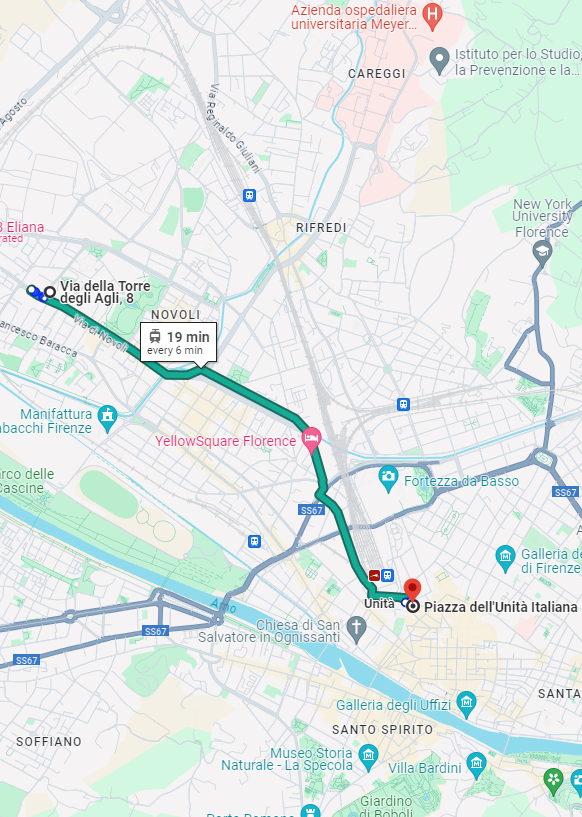
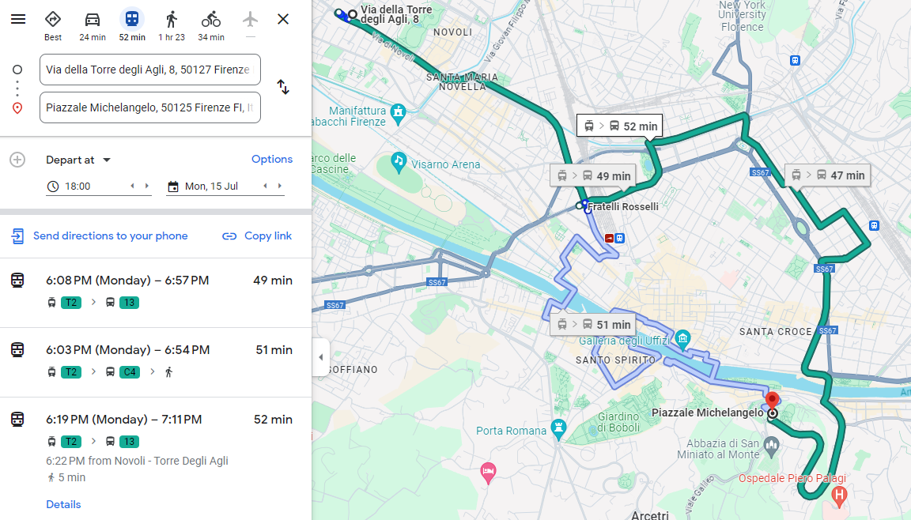
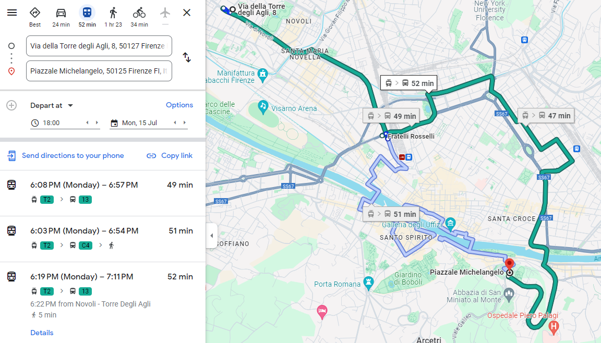
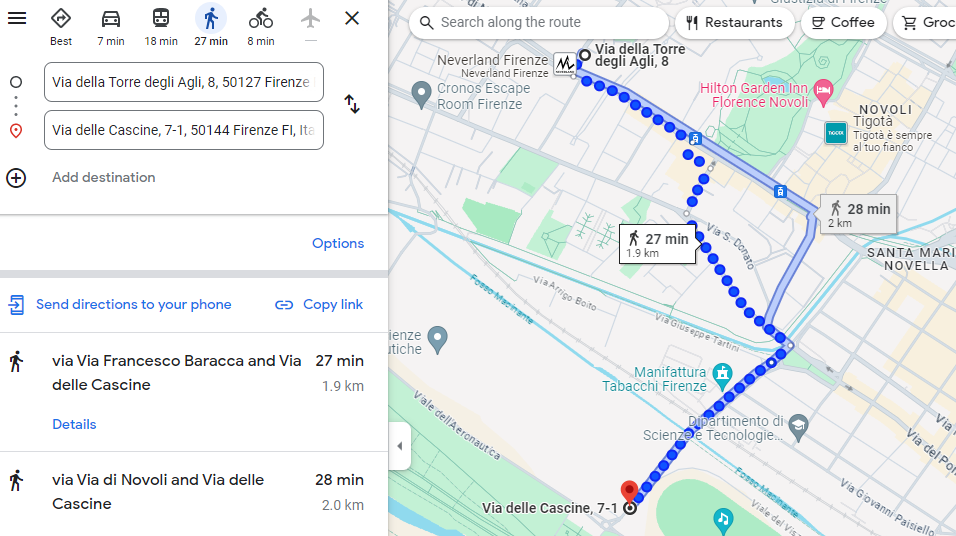
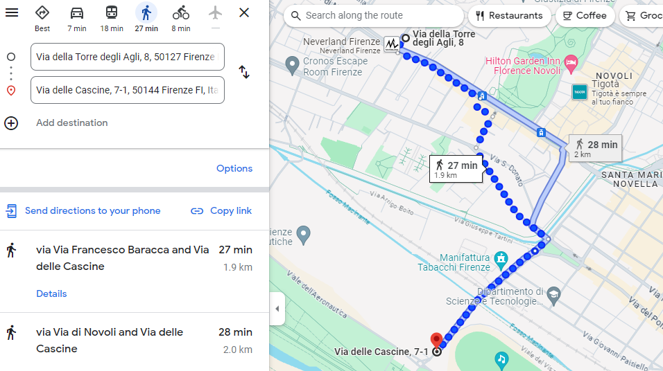

Transportes públicos
A continuación, encontrarás información sobre cómo llegar al centro histórico y otros lugares de interés utilizando los servicios de transporte público.
Parada de tranvía más cercana
- La parada de tranvía más cercana es Novoli - Torre degli Agli. Está a solo 2 minutos a pie desde Via della Torre degli Agli, 8. Al salir de casa, gira a la izquierda y camina por Via della Torre degli Agli. Gira a la derecha en Via di Novoli y cruza la calle para llegar a la parada.
- Puedes comprar los billetes de tranvía en las máquinas automáticas disponibles en todas las paradas del tranvía. Compra tu billete antes de subir, valídalo al entrar y, a partir de ese momento, el billete tendrá una validez de 90 minutos, pudiendo usarlo para más trayectos dentro de ese tiempo.
- Encuentra más información sobre la red de tranvías en la página oficial: gestramvia.it
- 19 minutos hasta la estación de tren de Santa María Novella.
- 19 minutos hasta el centro de la ciudad.


Hacia el centro histórico
- Corazón de la ciudad, lleno de arte e historia, con maravillas como el Duomo, el Ponte Vecchio y la Galería de los Uffizi.
- Desde Via della Torre degli Agli 8, llega a la parada de tranvía y toma el Tranvía T2 desde Novoli - Torre degli Agli hasta la parada Unità, cerca de la estación de tren de Santa María Novella. El trayecto dura unos 19 minutos, con tranvías cada 6 minutos.
- Al bajar del tranvía, tómate un momento para admirar la Basílica de Santa María Novella y su plaza homónima antes de explorar el centro histórico. 


Hacia Piazzale Michelangelo
- Un mirador panorámico con vistas impresionantes de Florencia, con una réplica del David de Miguel Ángel y la cercana abadía de San Miniato al Monte.
- Desde Via della Torre degli Agli 8, toma el Tranvía T2 desde Novoli - Torre degli Agli hasta la parada Unità. El viaje dura unos 19 minutos.
- Desde Unità, camina 2 minutos hasta la parada de autobús Fratelli Rosselli. Toma el autobús 13 hasta Piazzale Michelangelo.
- Alternativamente, puedes llegar a pie desde Unità. La caminata dura unos 30 minutos.
 



Hacia el Parque delle Cascine
- El mayor parque urbano de Florencia, ideal para pasear, practicar deporte y relajarse.
- Desde Via della Torre degli Agli 8, puedes caminar al parque en unos 30 minutos.
 
